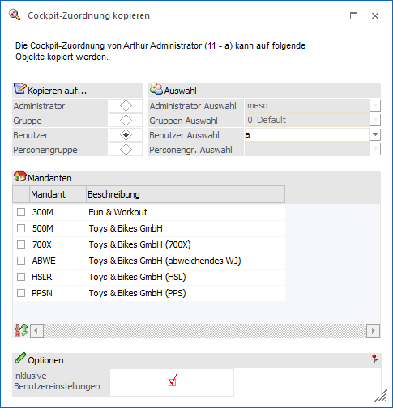
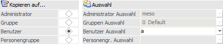
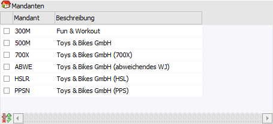
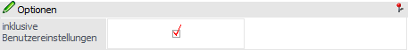
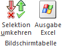
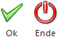

Durch die Anwahl des Buttons "Cockpit-Zuordnung kopieren" im Programm "Cockpit-Zuordnung" kann die Cockpit-Zuordnung eines Benutzers auf ein beliebiges Objekt kopiert werden.
Hinweis
Nur WinLine Benutzer des Typs "Administrator" oder mit der Administratorenberechtigung "Datenadministration" können das Objekt, auf welches kopiert werden soll, definieren. Allen anderen Benutzern steht nur die Möglichkeit zur Verfügung, ihre Zuordnung auf andere Mandanten zu übertragen.

Kopieren

Ø Kopieren auf…
An dieser Stelle kann definiert werden, auf welches Objekt die Zuordnung kopiert werden soll. Hierbei stehen folgende Varianten zur Verfügung:
ü Administrator
Die Zuordnung
kann auf einen oder alle anderen Administrator übertragen werden.
ü Gruppe
Die Zuordnung des
Benutzers wird auf eine Benutzergruppe übertragen. Hierbei werden alle
Zuordnungen für die Benutzer der Gruppe gelöscht.
ü Benutzer
Die Zuordnung des
Benutzers kann auf einen oder mehrere Benutzer kopiert werden.
ü Personen Gruppe
Die Zuordnung
des Benutzers kann auf die Benutzer der selektierten Personen Gruppen kopiert
werden.
Ø Auswahl
Gemäß der Auswahl von "Kopieren auf" kann hier das Objekt, auf welches die Zuordnung kopiert werden soll, definiert werden.
Tabelle "Mandantenauswahl"

In der Tabelle werden alle Mandanten angezeigt. Über die Checkbox wird eingestellt, auf welche Mandanten die Zuordnung kopiert werden soll.
Optionen

Ø inklusive Benutzereinstellungen
Durch Aktivierung dieser Option werden nicht nur die Zuordnungen, sondern auch die Benutzereinstellungen der Cockpits (Position, Inhalt und Größe von Widgets) kopiert.
Tabellenbuttons

Ø Selektion
Mit Hilfe dieses Buttons werden alle nicht ausgewählten Mandanten selektiert bzw. alle ausgewählten Mandanten deselektiert.
Ø Ausgabe Excel
Durch Anwahl des Buttons "Ausgabe Excel" wird der Inhalt der Tabelle nach Microsoft Excel übergeben.
Buttons

Ø Ok
Durch Anwahl des Buttons "Ok" bzw. der Taste F5 wird die Zuordnung kopiert.
Ø Ende
Mit Hilfe des Buttons "Ende" bzw. der Taste ESC wird das Fenster geschlossen.